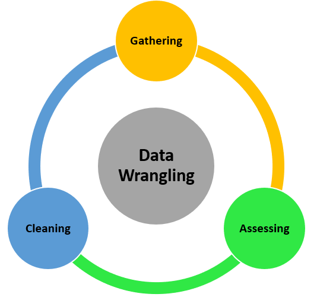
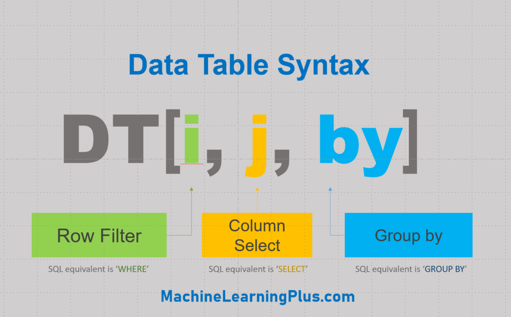

Data Wrangling at Scale with data.table
This presentation will detail data.tables data wrangling functionality, including:
- Data manipulation
- Modifying variables
- Summarizing data
- Chaining
- Joins
- Plotting data
We will end the presentation with an exercise.
What’s data wrangling? 🤔
Data wrangling is the process of converting raw data to another format which can be readily analyzable.

data.table 📺
data.table provides an efficient and high performance alternative of base R’s data.frame when conducting data wrangling.
data.table enables this efficiency by providing:
- concise syntax: fast to type, fast to read
- fast speed
- memory efficiency
- careful API lifecycle management
- a large community
- rich features
Importing with fread()
data.table’s efficiency begins from the outset with fread(), which is short for fast read is data.table’s version of read_csv().
Let’s download and read the mtcars dataset and call it mt using fread().
library(dplyr)
library(data.table)
mt <- as.data.frame(fread("mtcars.csv"))Let’s check how fast fread() actually is it compared to read.csv. You can also write a file using fwrite() in data.table like write.csv.
# Create a large .csv file
set.seed(28)
trial <- data.frame(matrix(runif(10000000), nrow=1000000))
#write.csv(trial, 'trial.csv', row.names = F)We can then see that fread() is at least 20 times faster! Let’s check it out!
# Time taken by read.csv to import
#system.time({trial_df <- read.csv('trial.csv')})
# Time taken by fread to import
#system.time({trial_df <- fread('trial.csv')})Creating data tables
To highlight what a data table is, we will create data tables using different functions and compare the results with a data frame. Let’s use a built-in R data called airquality.
head(airquality)class(airquality)## [1] "data.frame"To convert this data frame to a data table, we can either use:
data.table()andas.data.table()- This function creates a copy of the data and converts it to a data.tablesetDT()- This function converts the data to a data.table, there is then no need to assign to a new object
We convert airquality data frame to a data table using as.data.table. It then becomes both a data table and a data frame.
class(airquality)## [1] "data.frame"airqualityDT <- as.data.table(airquality)
class(airqualityDT)## [1] "data.table" "data.frame"Now, we do the same for the mt data frame.
class(mt)## [1] "data.frame"setDT(mt) # we do not need to assign mt to a new object
class(mt)## [1] "data.table" "data.frame"# for illustration purposes, let's use `as.data.table` and assign it to mtDT
mtDT <- as.data.table(mt)
class(mtDT)## [1] "data.table" "data.frame"We can “manually” create a data table using data.table().
DT <- data.table(x = 1:8,
y = round(pi*1:8,2),
z = letters[1:8])
knitr::kable(DT)| x | y | z |
|---|---|---|
| 1 | 3.14 | a |
| 2 | 6.28 | b |
| 3 | 9.42 | c |
| 4 | 12.57 | d |
| 5 | 15.71 | e |
| 6 | 18.85 | f |
| 7 | 21.99 | g |
| 8 | 25.13 | h |
Packages and functions that work with data frames also work for data tables. Since a data.table is a data.frame, it is compatible with R functions and packages that accept only data.frames.
names(mtDT)## [1] "carname" "mpg" "cyl" "disp" "hp" "drat" "wt"
## [8] "qsec" "vs" "am" "gear" "carb"dim(mtDT)## [1] 32 12str(mtDT)## Classes 'data.table' and 'data.frame': 32 obs. of 12 variables:
## $ carname: chr "Mazda RX4" "Mazda RX4 Wag" "Datsun 710" "Hornet 4 Drive" ...
## $ mpg : num 4.58 4.58 4.77 4.63 4.32 ...
## $ cyl : int 6 6 4 6 8 6 8 4 4 6 ...
## $ disp : num 160 160 108 258 360 ...
## $ hp : int 110 110 93 110 175 105 245 62 95 123 ...
## $ drat : num 3.9 3.9 3.85 3.08 3.15 2.76 3.21 3.69 3.92 3.92 ...
## $ wt : num 2.62 2.88 2.32 3.21 3.44 ...
## $ qsec : num 16.5 17 18.6 19.4 17 ...
## $ vs : int 0 0 1 1 0 1 0 1 1 1 ...
## $ am : int 1 1 1 0 0 0 0 0 0 0 ...
## $ gear : int 4 4 4 3 3 3 3 4 4 4 ...
## $ carb : int 4 4 1 1 2 1 4 2 2 4 ...
## - attr(*, ".internal.selfref")=<externalptr>For reference, the mt data has the following variables:
- [, 1] carname - Car name
- [, 2] mpg - Miles/(US) gallon
- [, 3] cyl - Number of cylinders
- [, 4] disp - Displacement (cu.in.)
- [, 5] hp - Gross horsepower
- [, 6] drat - Rear axle ratio
- [, 7] wt - Weight (1000 lbs)
- [, 8] qsec - 1/4 mile time
- [, 9] vs - Engine (0 = V-shaped, 1 = straight)
- [,10] am - Transmission (0 = automatic, 1 = manual)
- [,11] gear - Number of forward gears
- [,12] carb - Number of carburetors
Data manipulation with data.table 🚗
When compared to a data frame, the basic arguments within brackets are NOT row and column numbers but rather “i”, “j” and “by”.
For example, a data table named DT, DT[i, j, by] translates to “Take DT, subset rows using i, then calculate j grouped by by”.

Let’s compare filtering using conditional statements in a data frame vs. in a data table. You will notice one of the primary benefits of data table, you only need to pass the column names!
mt[mt$cyl == 6 & mt$gear == 4, ]# datatable syntax
mtDT[cyl==6 & gear==4, ]Filtering rows
Selecting rows is largely similar to data frame.
# select a row
mtDT[1,]# selecting first five rows
mtDT[1:5,]# no need to put comma in selecting rows
mtDT[1:2]# subsetting using conditional statements
mtDT[cyl < 5 & am == 0]Selecting columns
There are some pointers you have to remember to select a column.
# using index
mtDT[,1:2]# using column name
mtDT[ , mpg] # returns a vector## [1] 4.582576 4.582576 4.774935 4.626013 4.324350 4.254409 3.781534 4.939636
## [9] 4.774935 4.381780 4.219005 4.049691 4.159327 3.898718 3.224903 3.224903
## [17] 3.834058 5.692100 5.513620 5.822371 4.636809 3.937004 3.898718 3.646917
## [25] 4.381780 5.224940 5.099020 5.513620 3.974921 4.438468 3.872983 4.626013mtDT[ , "mpg"] # returns the column# selecting multiple columns using "list" or puting inside ".()"
mtDT[, list(mpg, cyl)]mtDT[, .(mpg, cyl)]# selecting multiple columns using a character vector
col <- c('mpg', 'cyl', 'disp')
#mtDT[, col] # returns an error
# need to put, with = FALSE, or add ".." before the character vector
mtDT[, col, with = FALSE]mtDT[, ..col]Subsetting rows and columns
Combing what we learned above, we can filter rows and select columns together from a data table.
# selecting first row, second column
mtDT[1,2] # returns the columnmtDT[1,cyl] # returns a vector## [1] 6mtDT[1,"cyl"] # returns the columnmtDT[1,list(mpg, cyl)] # returns the columnmtDT[1, .(mpg, cyl)] # returns the columnmtDT[1, c(mpg, cyl)] # returns a vector## [1] 4.582576 6.000000Modifying variables 🔑
Data.table also makes it easy to:
- Drop columns;
- Rename columns; and
- Assign and save new variables.
Dropping columns
col <- c('mpg', 'cyl', 'disp')
mtDT[, !col, with = FALSE]mtDT[, !..col, with = FALSE] # note: you need to assign this to a new object to make a new data table excluding the dropped variablesRenaming columns using setnames()
setnames(mtDT, 'vs', 'engine_type')
names(mtDT) # vs renamed to engine_type## [1] "carname" "mpg" "cyl" "disp" "hp"
## [6] "drat" "wt" "qsec" "engine_type" "am"
## [11] "gear" "carb"Assigning and saving new variables
To create a new column, we use this symbol := to assign the new variable.
mtDT[, cyl_gear := cyl + gear]
mtDT[, cyl_gear] # returns a vector## [1] 10 10 8 9 11 9 11 8 8 10 10 11 11 11 11 11 11 8 8 8 7 11 11 11 11
## [26] 8 9 9 13 11 13 8mtDT[, "cyl_gear"] # returns the columnWe can also create multiple columns like using mutate() in dplyr. In data.table, we only need to put back single quotes to := and assign new variables.
mtDT[, `:=`(cyl_gear2 = cyl * gear,
cyl_gear3 = cyl - gear)]
names(mtDT)## [1] "carname" "mpg" "cyl" "disp" "hp"
## [6] "drat" "wt" "qsec" "engine_type" "am"
## [11] "gear" "carb" "cyl_gear" "cyl_gear2" "cyl_gear3"head(mtDT[, list(cyl_gear2, cyl_gear3)])Summarizing data 💻
Summarising data is more readable and easier to type as it takes fewer key strokes compared to dplyr.
mtDT[,(mean_hp = mean(hp))] # returns a vector## [1] 146.6875# Notice what happens using "."
mtDT[,.(mean_hp = mean(hp))] # returns namemtDT[,.(mean_hp = mean(hp), sd_hp = sd(hp))] # without the "." at the beggining, you will get an errormtDT[,.(mean_hp = mean(hp), sd_hp = sd(hp)), by = .(engine_type)]# you can remove the . if you're only grouping using one variable
mtDT[,.(mean_hp = mean(hp), sd_hp = sd(hp)), by = engine_type]Chaining 📱
Chaining is like piping in dplyr. You only need to attach square brackets at the end, with your method, to add an additional step in the analysis.
For example, we want to return the average mpg, disp, wt, qsec. Then, order the results by cyl.
mtDT[, .(mean_mpg=mean(mpg),
mean_disp=mean(disp),
mean_wt=mean(wt),
mean_qsec=mean(qsec)), by=cyl]mtDT[, .(mean_mpg=mean(mpg),
mean_disp=mean(disp),
mean_wt=mean(wt),
mean_qsec=mean(qsec)), by=cyl][order(cyl),]Recall that the dplyr piping version of this is:
mtDT %>%
group_by(cyl) %>%
summarise(mean_mpg=mean(mpg),
mean_disp=mean(disp),
mean_wt=mean(wt),
mean_qsec=mean(qsec)) %>%
arrange(cyl)Joins with data.table 👪
Key
The concept of a “key” is useful in data tables, especially in merging data. We can set a column as a key using setkey().
setkey(mtDT, carname) # setting carname as key
setkey(mtDT, carname, cyl) # setting multiple keysRemember the chaining example a while ago. We grouped and ordered by cyl. Let’s re-do that using a shortcut by using keyby.
# instead of using this chain
mtDT[, .(mean_mpg=mean(mpg),
mean_disp=mean(disp),
mean_wt=mean(wt),
mean_qsec=mean(qsec)), by=cyl][order(cyl), ]# use keyby to group and order by cyl
mtDT[, .(mean_mpg=mean(mpg),
mean_disp=mean(disp),
mean_wt=mean(wt),
mean_qsec=mean(qsec)), keyby=cyl]key(mtDT)## [1] "carname" "cyl"setkey(mtDT, NULL) # to remove the keyJoining data tables
Now that we know what a key is, we can use this concept to merge or join two data tables.
setkey(mtDT, carname)
# we subset 3 data tables with 10 rows
dt1 <- mtDT[5:25,.(carname, mpg, cyl)]
dt2 <- mtDT[1:10, .(carname, gear)]
dt3 <- mtDT[2:12, .(carname, disp)]
# Inner Join
merge(dt1, dt2, by='carname') # returns 6 rows from row 5 to 10# Left Join
merge(dt1, dt2, by='carname', all.x = T) # returns 21 rows using dt1 as the base# Outer Join
merge(dt1, dt2, by='carname', all = T) # returns 25 rowsPlotting data 💹
mtDT[,plot(mpg, drat, main="mpg vs. drat")]
## NULLFurther readings 👨🎓
data.table has many other functions including:
dcast- pivot/wider/spreadmelt()- unpivot/longer/gather.SDand.SDcols
Exercise ☀️
Using data.table and the mtcars.csv data.
Sources 👨🏫
This tutorial is partly based on data.table in R – The Complete Beginners Guide by Selva Prabhakaran and Data Wrangling — Raw to Clean Transformation by Suraj Gurav.
Presentation by Ma. Adelle Gia Arbo & Viraaj Akuthota
Intro to Data Science Workshop Fall 2021